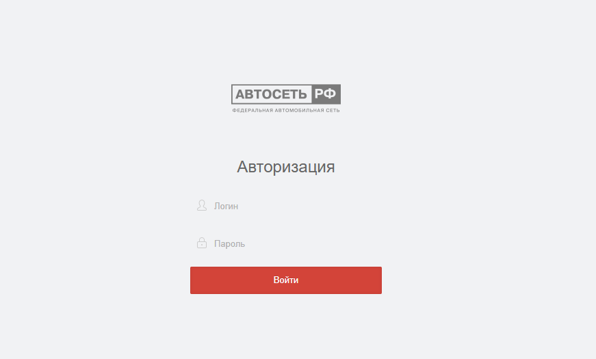
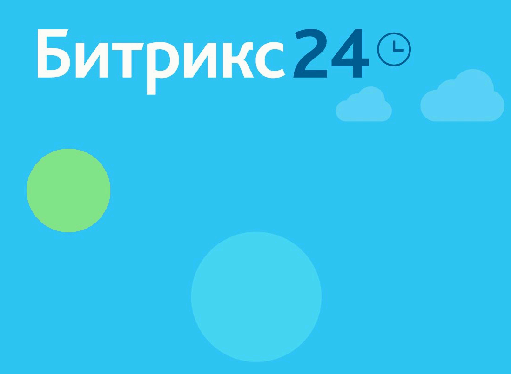

Целью разработки live.autonet.pro», является создание единой системы для поддержания бизнес-процессов автобизнеса: продажи, выкупа, trade-in, установки дополнительного оборудования, предоставления различного спектра услуг по автомобилям.
Система live.autonet.pro предназначена для выполнения следующих задач:
| Позиция | Базовый | Оптимальный | Премиум |
|---|---|---|---|
| Цена, руб./мес. за одну организацию | 180 000 руб. | 300 000 руб. | 420 000 руб. |
| Максимальное количество пользователей / месяц | 20 | 30 | 40 |
| Рабочий стол | ✓ | ✓ | ✓ |
| Обращения | ✓ | ✓ | ✓ |
| Оценки | ✓ | ✓ | ✓ |
| Склад | ✓ | ✓ | ✓ |
| Звонки | ✗ | ✓ | ✓ |
| Управление | ✓ | ✓ | ✓ |
| Импорт/Экспорт | ✓ | ✓ | ✓ |
| События | ✗ | ✓ | ✓ |
